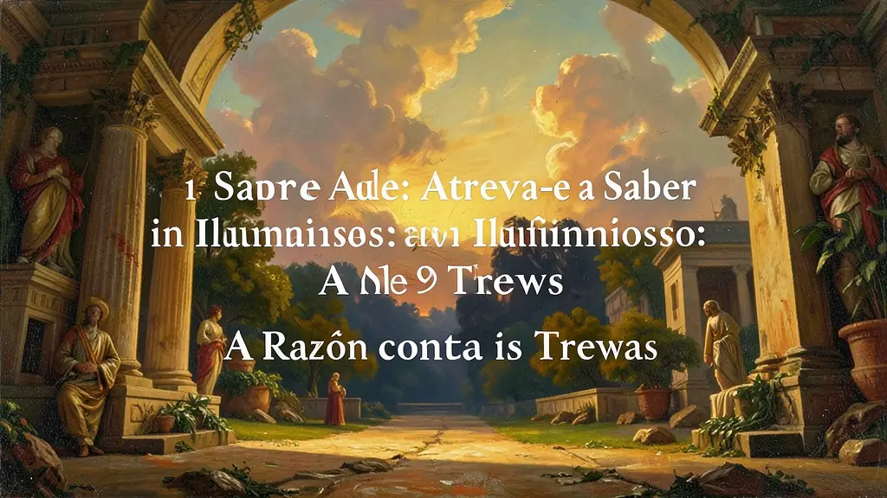
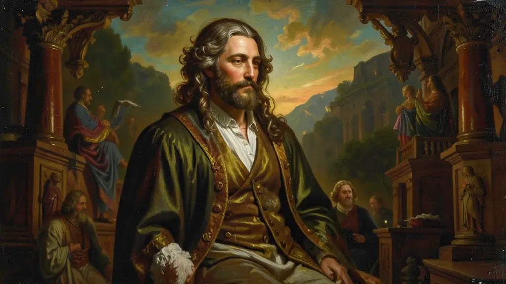

Capítulo 01
1. Sapere Aude: Atreva-se a Saber
O filósofo Immanuel Kant resumiu o iluminismo no lema 'Ouse Saber'. Era o fim da infância da humanidade. O homem não deveria mais aceitar ordens de um rei ou de um padre apenas por tradição, mas deveria usar seu próprio intelecto para julgar o que era certo e o que era errado. A luz da razão era a única cura para a cegueira do dogma medieval.

Capítulo 02
2. Montesquieu e a Divisão dos Poderes
Para Montesquieu, todo homem que tem poder sente a tentação de abusar dele. Por isso, 'o poder deve frear o poder'. Sua ideia de tripartição (Executivo, Legislativo e Judiciário) é a base de quase todas as democracias atuais. Se o Rei faz as leis, executa as leis e julga quem desrespeita as leis, ele é um tirano. A divisão garante que ninguém seja maior que a Lei.
Capítulo 03
3. Rousseau e a Vontade Geral
Diferente de outros iluministas que focavam na elite, Jean-Jacques Rousseau focava no povo. Para ele, o homem nasce bom, mas a sociedade o corrompe (o mito do 'bom selvagem'). No Contrato Social, o povo é o verdadeiro soberano, e o governo é apenas um funcionário do povo. Essa ideia alimentou o lado mais radical da Revolução Francesa e as democracias modernas.

Capítulo 04
4. Adam Smith e o Laissez-faire
Na economia, o misticismo do Rei que controlava preços foi substituído pela lei da oferta e procura. Adam Smith pregava que se cada um buscasse sua própria riqueza individual, uma 'mão invisível' acabaria gerando prosperidade para toda a sociedade. Foi o fim do Mercantilismo e do monopólio comercial, permitindo que a burguesia acumulasse o capital necessário para as revoluções industriais.
Capítulo 05
5. Despotismo Esclarecido no Brasil
No Brasil Colonial, o exemplo mais claro foi o Marquês de Pombal. Ele usou a razão iluminista para centralizar a administração de Portugal, expulsou os jesuítas (que tinham muito poder sobre a educação) e criou companhias de comércio. Foi um iluminista no método (razão e ciência), mas um absolutista na política (manteve o poder total do Rei).
O Iluminismo, ou o Século das Luzes, foi um movimento intelectual que elegeu a Razão como a única ferramenta capaz de libertar o homem das 'trevas' da ignorância e da superstição religiosa. Immanuel Kant, em seu ensaio 'O que é o Esclarecimento?', definiu o movimento como a saída do homem de sua menoridade intelectual. Os iluministas atacavam frontalmente os pilares do Antigo Regime: o absolutismo monárquico, os privilégios da nobreza e o controle da Igreja sobre a educação e a vida pública.
Os filósofos como Montesquieu (tripartição dos poderes), Rousseau (contrato social e soberania popular) e Voltaire (liberdade de expressão) forneceram o arcabouço teórico para as revoluções liberais que redesenhariam o mapa político mundial. Na economia, Adam Smith criticava o mercantilismo estatal, propondo a liberdade de mercado (liberalismo econômico) como o caminho para o progresso das nações. Foi um período de crença inabalável no progresso científico como motor para a felicidade humana.
O Despotismo Esclarecido foi a tentativa de alguns monarcas europeus de conciliar a autoridade real com as reformas iluministas, buscando modernizar seus estados sem abrir mão do poder. No entanto, o legado mais duradouro do iluminismo foi a Declaração dos Direitos do Homem e do Cidadão, que estabeleceu que todos os homens nascem livres e iguais em direitos. Para o Enem, é essencial entender o Iluminismo como a base ideológica da democracia moderna e dos direitos humanos contemporâneos.
Fonte: KANT, Immanuel. Resposta à pergunta: Que é o Esclarecimento? In: Textos Seletos. Petrópolis: Vozes, 1985.
Atividades interativas
Questões para fixar
A tripartição do poder em Executivo, Legislativo e Judiciário, proposta por Montesquieu, tem como objetivo fundamental:
O pensamento iluminista de Adam Smith ficou conhecido por defender a 'não intervenção do Estado na economia'. Qual termo francês resumia essa filosofia?
Qual foi o principal objetivo do movimento Iluminista no século XVIII?
Quem propôs a divisão do poder em três esferas independentes para evitar a tirania?
Qual foi o papel da Enciclopédia de Diderot e D'Alembert no movimento Iluminista?